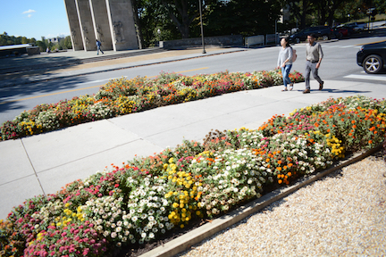

Contrast
"Contrast is an important principle for designing interesting layouts (as opposed to boring) layouts. Contrast, as a principle, offers a great deal of flexibility.There are limitless ways to achieve it. Start with the elements of design. You can employ contrasting sorts of lines or shapes. You may juxtapose contrasting sorts of lines or shapes. Introducing a pattern in proximity to no pattern results in contrast."(White Space Is Not Your Enemy,Pg.56)
Essentially, contrast is the use of two varying objects or designs to create a unique layout. This helps keep the viewer interested and focused on what the creator is trying to display.
This sign does a good job of demonstrating contrast. Although the entire sign is made up of black and white, the pictures are made up of different sizes and shapes. Some are bigger than others, some are square and rectangular while others are triangular. As a whole, they create a distinct design that has a lot of components that create an interesting layout.
